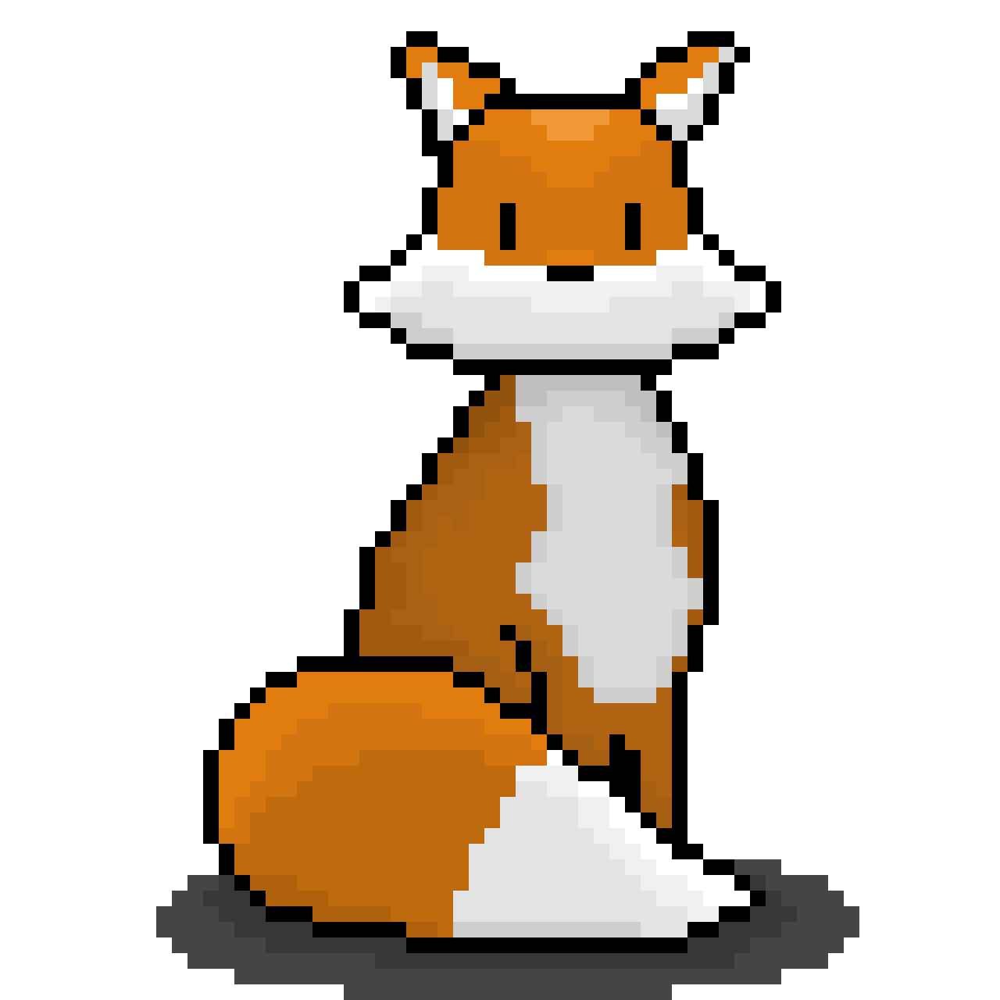

bureau des projets
le site perso de Jordan Mrt.
en ce moment : chargement…

Salut, c'est mon coin perso. Je bidouille des trucs quand j'en ai envie (des sites, PWA, des idées farfelues) et je note ça ici de temps en temps. Rien de très sérieux, surtout pour le plaisir de coder et d'écrire dans quelque chose proche des blogs que j'ai connu quand j'étais plus jeune.
projets
- Time To Binge tracker de films et séries
- Portfolio mon site principal, bento pop
- The Letter Club projet d'écriture épistolaire
- SNCF Live tracker de trains en temps réel
- G.U.S Générateur d'Utilités Sensibles
blog et billet d'humeur
12 août 2026